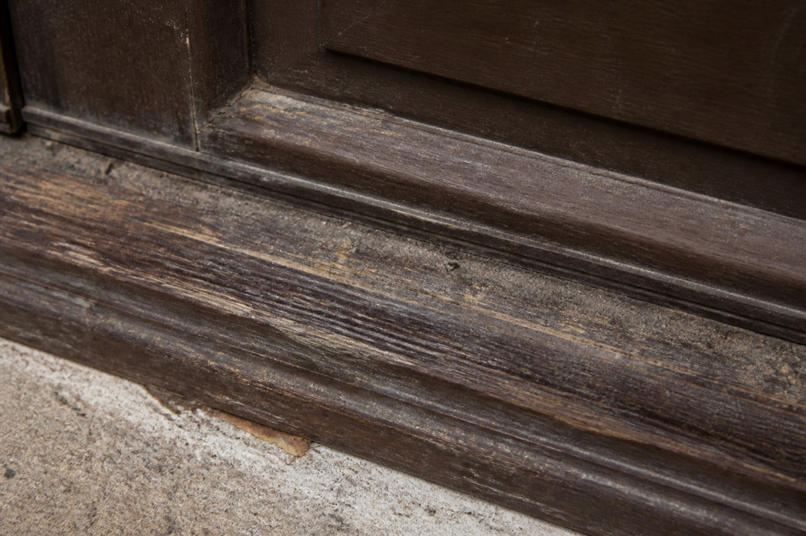

Basic | |
| Object | threshold (menkan) |
| Verbs | step over, lift, stop, block |
| Not written | warding mantras |
A threshold splits inside from outside. The foot is to step over it. Sit, stand on it, nail, park a cabinet — alley mouths will shout no manners. Shouting is talk. Night duty does not close a case on it. 38/44
